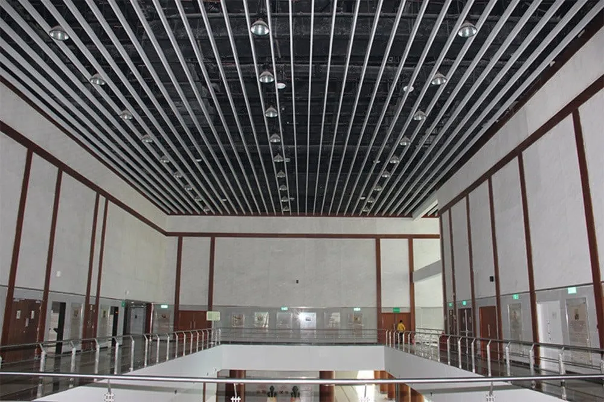

Inspiration gallery for architects and homeowners — horizontal screening, vertical sun blades, curved features, canopies and wooden-finish rafters with indicative pricing.

Indicative ₹/sqft range — enter facade area for a quick band. For item-wise BOQ with gaps, brackets and finish, use our live product calculators linked below. GST 18% extra.
*GST 18% extra | Transport charges extra | Final price after site visit
Calculated by WoodenMax Pricing Engine v1.0 | woodenmax.in
| Design style | Indicative ₹/sqft | Notes |
|---|---|---|
| Horizontal screening | ₹580 – ₹750 | 75×38 common |
| Vertical sun blades | ₹580 – ₹820 | West wall |
| Curved feature | ₹720 – ₹980 | Custom bending |
| Canopy / entrance | ₹650 – ₹900 | See canopy calc |
| Wooden finish rafters | ₹680 – ₹920 | Villa elevation |
| Specification | Standard value |
|---|---|
| Alloy | 6063-T6 extruded aluminium |
| Wall thickness | 1.2 – 1.6 mm (profile dependent) |
| Coating | Polyester / PVDF powder coat |
| Wind load | Designed per elevation drawing |
| Warranty | 10 years on profile coating (manufacturing) |
| GST | 18% extra on all rates shown |
| Finish | UV stability | Maintenance | Typical ₹/sqft |
|---|---|---|---|
| Plain powder coat | Good | Wash yearly | ₹450 – ₹680 |
| Matt black | Very good | Low | ₹580 – ₹820 |
| Wooden texture | Excellent | Wipe only | ₹680 – ₹920 |
| Perforated panel | Good | Low | ₹620 – ₹880 |
Typical supply includes profiles, brackets, powder coat, cutting, packing and installation labour. MS sub-frame, scaffolding or difficult access may be quoted separately after site visit.
Blade size, gap and finish are locked on the signed drawing. Wooden texture, matt black and plain colours use UV-stable polyester or PVDF systems.
Free measurement in Hyderabad, Delhi NCR & Jaipur for projects above minimum area. Other cities — video survey or architect drawing accepted.
We review architect elevations, suggest profile sizes and gap, then issue a locked BOQ. Share PDF on contact form.
WoodenMax fabricates architectural aluminium louvers in-house from 6063-T6 profiles, powder-coats in controlled booths, and installs with dedicated facade crews. We have executed residential villas, commercial towers and hospitality facades across Hyderabad, Delhi NCR and Jaipur — with documented case studies and factory QC you can verify before placing an order.
Every batch is cut to drawing, hole-punched for bracket fixing, and coated after aluminium pretreatment. Gap between blades, blade angle and bracket spacing are locked on the approved BOQ so site teams do not improvise.
Rates on this page are indicative bands for budget planning. Final quote after free site measurement includes profile size, finish, area, access difficulty and sub-frame requirement — shared as a locked PDF BOQ.
Item-wise BOQ with profile, gap, brackets and finish — use our dedicated calculator pages:
Yes — basic layout support on paid projects; architect drawing preferred for final fabrication.
Yes — our typical ₹/sqft range includes fabrication, powder coat and site fixing. MS sub-frame may be quoted separately if the existing structure needs reinforcement.
Rates on these pages are indicative. Practical minimum is 80–120 sq.ft facade area — smaller patch jobs receive a consolidated quote after a site visit.
Standard fixed louvers: 12–18 working days fabrication after drawing sign-off. Motorized systems add 5–7 days.
No. All rates are ex-GST. GST 18% is added on the invoice.
Primary teams: Hyderabad, Delhi NCR, Jaipur. Mumbai and Bengaluru are project-based. Pan-India dispatch available for bulk supply.
WoodenMax visits free within 48 hours in Hyderabad, Delhi NCR & Jaipur. GST 18% extra on all rates.
Book free site visit →